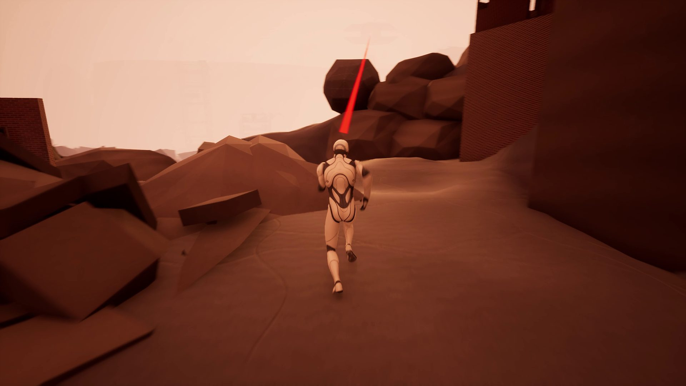

경원철 · Content Designer
레벨과 전투를 만들고
데이터로 확인하는 콘텐츠 기획자
- 라이브 출시 2건드래곤네스트 이벤트 레벨 · 1:1 보스
- UE5 개인 레벨AI로 약 2개월 제작 · 플레이 12분 50초
- 지표 로그 구축측정 콘텐츠 로그 설계 · AI 주간 분석 자동화
PANOPTICON: Breaking Point (가제) · 개인 UE5 레벨

Projects

하로리 선셋 페스타
드래곤네스트 이벤트 · 2026.10.07 – 11.05 · 기획 단독
같은 코스만 반복하던 레이싱 이벤트를, 섬 전체를 달리며 매 판 동선을 직접 짜는 수집 레벨로 바꿨습니다.
- 아이돌·축제·늦여름 테마로, 쉬운 난이도에서 넓은 섬을 자유롭게 달리는 오픈형 맵
- 부스트 상태로 부딪히면 팬이 쓰러지고 부스트가 이어지는 부스트 연계
- 스페셜 존·히든 존의 스페셜 굿즈와 랜덤 아이템으로 이어지는 보물 수집
- 지형·배치, 몬스터 액션과 AI, 객체별 트리거, 연출까지 혼자 만들어 출시

PANOPTICON: Breaking Point
개인 UE5 레벨 (가제) · 약 2개월 · 재직 중 제작
보이지 않는 감시자가 내려다보는 위압감과 공포를 노린 추격 레벨입니다. 7개 구역 중 긴장 구간은 달동네 도주와 상층부 추격 두 곳에 모으고, 그 사이를 정보와 휴식으로 채웠습니다.
- 안개 속 감시자와 머리 위 키클롭스로 보이지 않는 공포와 높이의 압도감을 설계
- 2구역·6구역 관문에서 거절과 우회, 6구역에서는 엄폐물로 달리고 숨는 템포를 조절
- 지형·배치·대사는 직접, 블루프린트·라이팅·VFX는 AI 코딩 도구에 지시하고 검수

진천검(震天劍) 유영
드래곤네스트 독무 토벌전 시즌2 · 1:1 보스 · 2026.05
땅을 뒤흔드는 지진과 광범위 공격을 콘셉트로 잡은 무협풍 1:1 보스입니다. 바닥을 내려치는 광역 공격과 카메라 흔들림, 무협 느낌의 돌진으로 패턴을 채웠습니다.
- 기동성이 유독 좋은 실버헌터를 견제하도록 공중까지 닿는 판정으로 조정 (파트 공통 의견)
- 피할 수 없던 유도 검을 직전 위치 바닥에 꽂혀 1초 뒤 터지는 공격으로 다시 설계
Last Sanctuary
6인 팀 프로젝트 · Unity 2D 액션 · 2025.06 – 08 · 전투·행동 기획
“전투가 밋밋하다”는 피드백을 받고, 퍼펙트 가드와 궁극기를 핵심 재미로 정해 연출을 집중했습니다.
AI 활용
UE5 개인 레벨은 AI에게 구현과 검수를 맡겨 만들었습니다. 현업에서는 지표 로그를 새로 만들고, 주간 분석을 AI로 자동화했습니다.
기획서 바로 보기
클릭하면 새 창에서 문서가 열립니다.
드래곤네스트 (라이브)
회사 내부 자료라 원본 대신, 포트폴리오용으로 재구성한 문서입니다.
Last Sanctuary
ABOUT
게임 전문 기자로 게임사와 이용자 양쪽을 취재하며 게임을 구조로 읽는 법을 익혔습니다.
지금은 드래곤네스트 콘텐츠 파트에서 이벤트 레벨과 보스 전투를 기획해 라이브에 출시하고 있습니다.
CAREER
- 드래곤네스트 콘텐츠 파트 · 콘텐츠 기획이벤트 레벨, 보스 토벌전, 패치노트, 라이브 이슈 대응 · 재직 중
- 지원커뮤니케이션즈 취재부 · 게임 전문 기자12개월
- 대일테크 무역부 · 의료장비 PM21개월